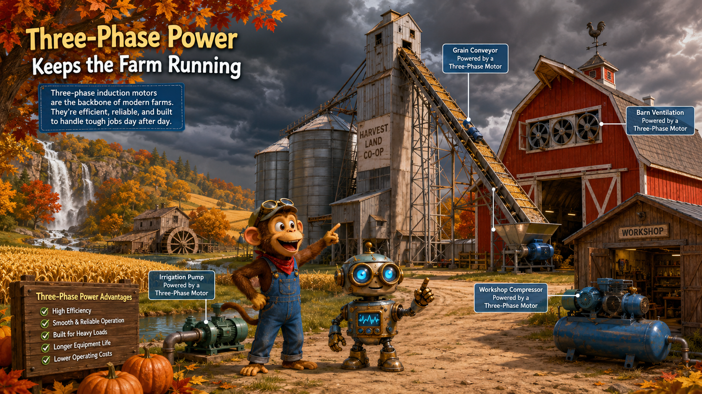
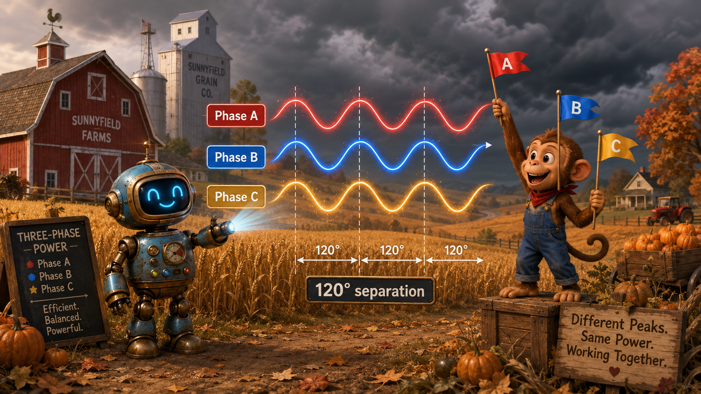
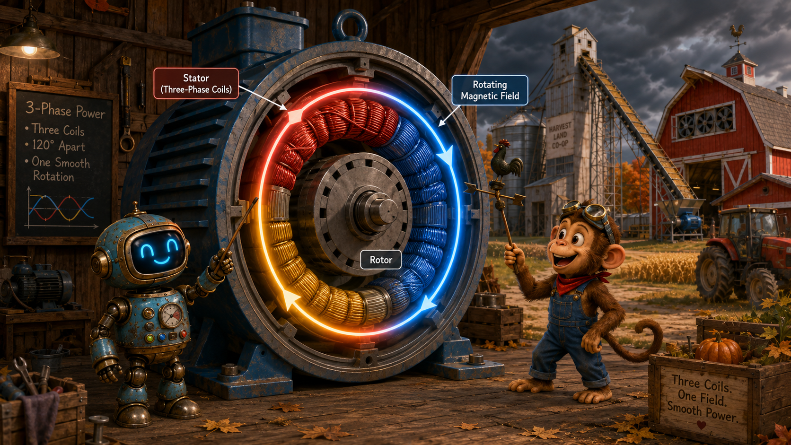
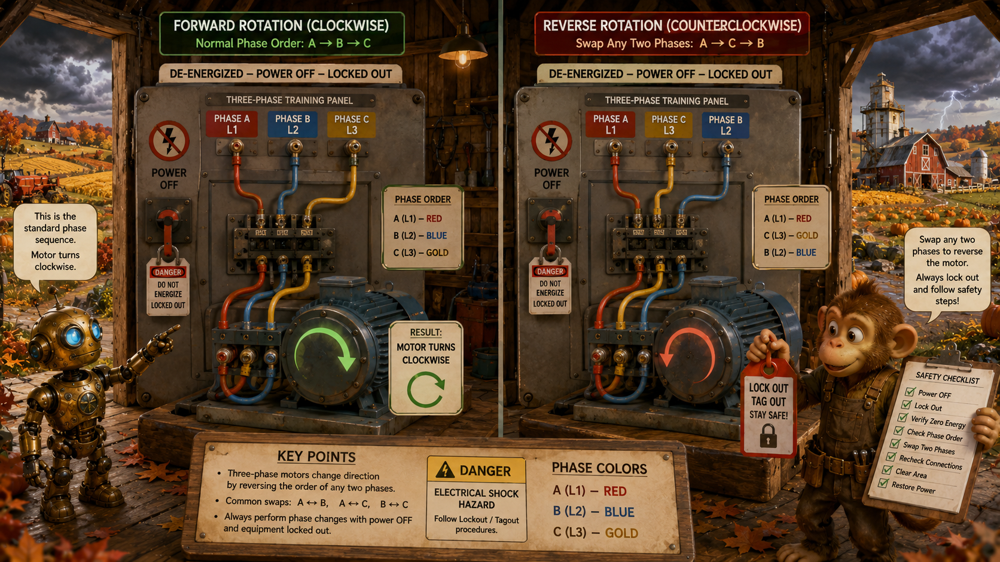
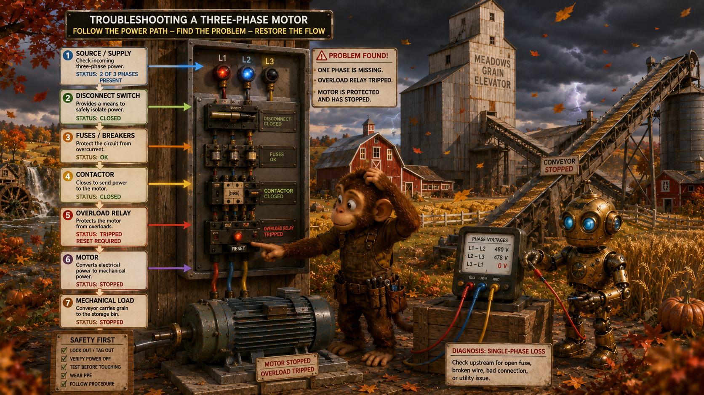

Phase A
Phase A rises, falls, and reverses like any AC waveform.
Lesson 6 · Smooth Power for Harvest
Harvest season is at its peak. The grain elevator, irrigation pump, barn ventilation fans, conveyor, and workshop compressor all need to run before an autumn storm reaches the farm. Monkey and Robot must expand the power system and bring the farm's large motors online.

Wide landscape educational illustration, whimsical painterly 3D science-adventure style. Monkey and a compact brass-and-blue Robot stand beside a large grain elevator and red barn on the same perfect autumn farm. Rolling golden wheat fields, pumpkin patches, bright orange and red leaves, the waterfall and watermill in the distance, and dark storm clouds approaching. Large three-phase motors power a grain conveyor, irrigation pump, barn fans, and workshop compressor. Warm harvest colors with dramatic storm light, no border, no watermark, 16:9 landscape.
Three-phase power combines three AC waveforms instead of relying on only one.
Phase A rises, falls, and reverses like any AC waveform.
Phase B follows the same pattern, but begins later in the cycle.
Phase C is delayed again, completing the three-part sequence.
How many coordinated AC waveforms are used in a three-phase system?
Three.
Monkey asks, “Why three pushes instead of one?” Robot replies, “Because three timed pushes keep the machine turning more smoothly.”
The three phases have the same frequency, but their peaks occur at different times.
All three phases repeat at the same rate.
The phases are evenly separated across one complete 360-degree cycle.
When one phase is falling, another is rising. The combined system delivers energy more evenly than a single-phase source.

Educational wide landscape illustration beside the autumn wheat field. Robot projects three glowing sine waves in red, blue, and gold, each separated by 120 degrees. Monkey uses three matching flags to mark the different peaks. The red barn, grain elevator, pumpkin patches, and approaching storm remain visible in the background. Clear labels for Phase A, Phase B, Phase C, and 120-degree separation. Painterly 3D style, detailed but uncluttered, 16:9 landscape.
What is the phase separation in a balanced three-phase system?
120 electrical degrees.
Imagine three workers pushing a heavy grain cart in sequence. Each one takes over before the previous push fades, so the cart keeps moving smoothly.
Three stator windings energized in sequence create a magnetic field that appears to rotate.
The stator contains three winding groups placed around the motor.
Each winding's magnetic field grows and shrinks according to its phase current.
The three changing fields combine into one magnetic field that rotates around the stator.

Wide educational cutaway illustration of a large three-phase motor in the farm machinery shed. Three stator coil groups glow red, blue, and gold around a circular rotor. Arrows show the combined magnetic field rotating smoothly around the motor. Robot points to the stator while Monkey follows the moving field with a weather vane-like pointer. Autumn farm machinery, grain conveyor, barn, and storm clouds visible beyond the open shed. Painterly 3D storybook engineering style, 16:9.
Does the stator physically spin to create the rotating field?
No. The stator stays still while the combined magnetic field rotates.
Rotating magnetic fields are fundamental to many industrial pumps, fans, conveyors, compressors, and machine drives.
A three-phase induction motor uses the rotating field to produce torque.
The stationary outer section contains the three-phase windings.
The rotor is the inner rotating part. Currents are induced in it by the rotating magnetic field.
The shaft carries mechanical torque from the rotor to the pump, fan, conveyor, or other load.
What creates current in the rotor of an induction motor?
The changing magnetic relationship between the rotating stator field and the rotor induces current in the rotor.
Monkey says, “The rotor is being chased by the field.” Robot answers, “Yes. The field leads, and the rotor follows.”
The rotor must turn slightly slower than the rotating magnetic field.
If the rotor exactly matched the rotating field, there would be no changing magnetic relationship and no continuing induced rotor current.
The small speed difference allows induction to continue, producing rotor current and magnetic force.
Why does an induction motor need slip?
Slip keeps the magnetic relationship changing so rotor current and torque can continue to be induced.
The rotor is like Monkey chasing a moving wagon. If he matches it exactly, there is no continuing pull between them.
Swapping any two phases reverses the direction of the rotating magnetic field.
The order in which the three phases reach their peaks determines the direction of the rotating field.
Interchanging any two phase conductors reverses phase sequence and therefore reverses motor rotation.

Split-scene educational illustration inside the red barn electrical room. On the left, Robot shows a de-energized three-phase training panel with Phase A, B, and C connected in one order, and the motor arrow turns clockwise. On the right, two phases are swapped and the arrow turns counterclockwise. Monkey holds a lockout tag and safety checklist. Bright autumn farm visible through the barn doors. Clear wiring colors, power-off symbols, painterly 3D teaching style, 16:9 landscape.
Phase changes must be made only with power isolated and verified off. Motor circuits can involve dangerous voltage and current.
Always verify rotation before coupling a motor to equipment that could be damaged by running backward.
Three-phase windings are commonly arranged in star, also called wye, or delta.
One end of each winding connects to a common point. This arrangement can provide line-to-neutral and line-to-line voltage relationships.
The three windings connect end-to-end in a closed triangle. Delta is common in many motor and industrial applications.
Which connection has a common center point?
Star, or wye.
Which connection forms a closed triangle?
Delta.
A practical motor circuit includes switching, protection, and controls.
A disconnect isolates the circuit. Fuses or breakers protect against excessive fault current.
A contactor is an electrically controlled switch used to connect or disconnect power to the motor.
An overload relay protects the motor from sustained excessive current that could cause overheating.
Start buttons, stop buttons, emergency stops, interlocks, and sensors control when the motor may run.
The motor nameplate lists important ratings such as voltage, current, frequency, phase, speed, and power.
The grain elevator motor will not start, and the storm is getting closer.

Dramatic educational illustration at the grain elevator before an autumn storm. Monkey checks a three-phase motor control panel while Robot measures the three incoming phase voltages. One phase indicator is dark, the overload relay is tripped, and the conveyor is stopped. Show clear diagnostic arrows from source to disconnect, fuses, contactor, overload, motor, and mechanical load. Red barn, golden wheat, pumpkins, bright leaves blowing in the wind, painterly 3D science-adventure style, 16:9 landscape.
What is single-phasing?
Single-phasing is the loss of one phase in a three-phase system. A motor may fail to start, run poorly, overheat, or draw excessive current.
Monkey says, “One phase is missing, so the three-part push is broken.” Robot replies, “Exactly. The motor no longer receives a balanced rotating field.”
Three-phase motors are common in pumps, conveyors, compressors, fans, elevators, and industrial machinery.
Good troubleshooting separates electrical faults from mechanical faults instead of treating the motor as the only possible problem.
The core ideas behind smooth three-phase motor power.
What creates the rotating magnetic field in a three-phase motor?
Three phase-shifted currents flowing through stator windings placed around the motor.
What simple wiring change reverses a three-phase motor?
Swap any two phase conductors, with power safely isolated.